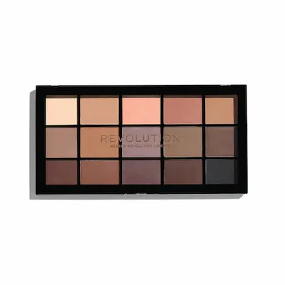
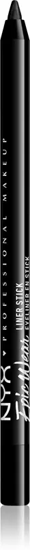
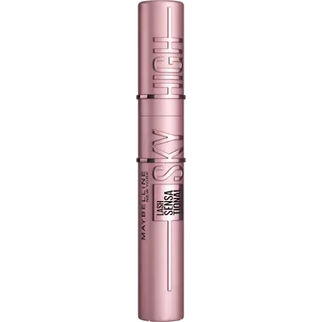
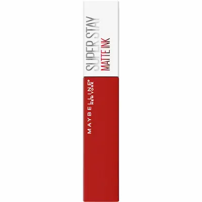
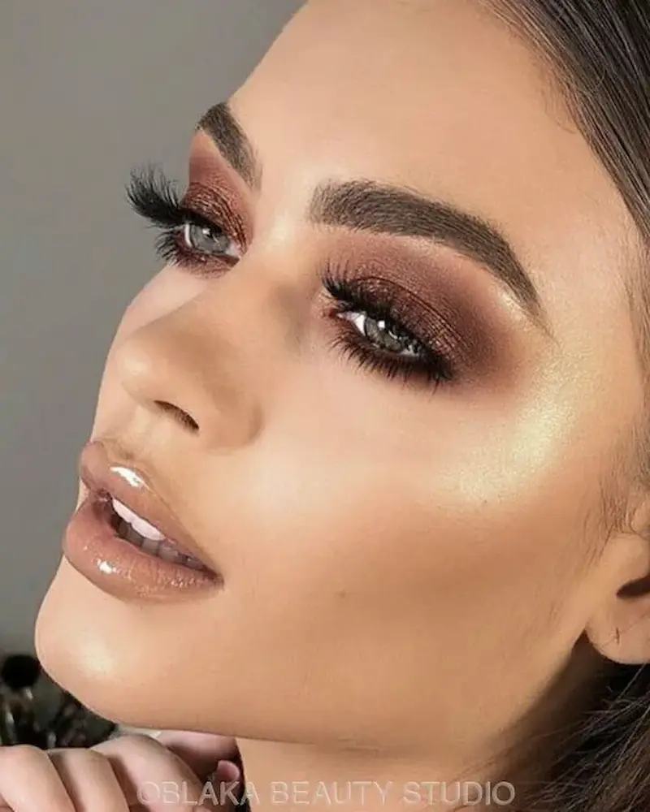
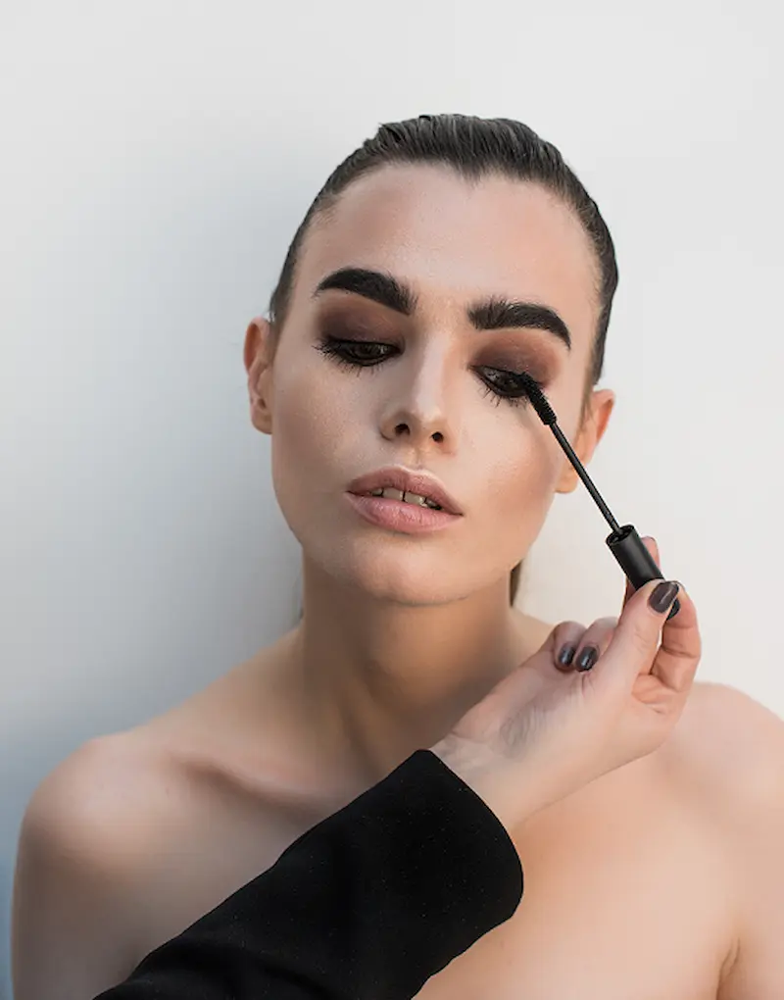

Ghidul paginii Smoky Eyes
Smoky Eyes pas cu pas
Tehnica pentru un look profund și expresiv
Top produse pentru Smoky Eyes
Farduri pigmentate și texturi rezistente
Produse premium pentru Smoky Eyes
Culoare intensă și rezultat profesional
Set accesibil pentru Smoky Eyes (până la 300 RON)
Set minim pentru un machiaj de impact
Programează-te la un makeup artist profesionist
Programează-te pentru un machiaj Smoky Eyes și obține un look expresiv și rezistent, care îți va evidenția profunzimea privirii.
Ce este Smoky Eyes
Smoky Eyes este o tehnică de machiaj al ochilor care creează un look profund, expresiv și ușor „estompat” , evidențiind forma ochilor și intensificând privirea.
Acest tip de machiaj se bazează pe estomparea treptată a culorilor și tranziții fine între nuanțe. Smoky Eyes creează efectul de ceață delicată, oferind privirii intensitate și profunzime.
Scopul principal este obținerea unui efect de profunzime fără linii dure: fardurile trebuie să se îmbine perfect, pentru un rezultat armonios și profesional.
Smoky Eyes este ideal pentru machiaj de seară, evenimente, ședințe foto și ocazii speciale — oferă un look intens, elegant și memorabil.
👉 Mai multe despre machiaj pentru ten gras
👉 Mai multe despre machiaj pentru ten uscat
De ce Smoky Eyes face privirea mai profundă și expresivă
- intensifică vizual privirea și evidențiază ochii
- subliniază forma ochilor și creează contrast
- oferă un efect de „fum” care estompează liniile dure
- transformă machiajul într-un look de seară elegant
- adaugă senzualitate și un accent dramatic, sofisticat

Pregătirea pielii pentru machiajul Smoky Eyes
Smoky Eyes este un machiaj de accent pentru ochi, de aceea este esențial să pregătești corect pielea pentru un rezultat curat, uniform și profesional.
Un ten neuniform sau cearcănele pot distrage atenția de la machiajul ochilor, așa că baza trebuie să fie cât mai netedă și luminoasă.
- Curățare — un produs delicat pentru o piele curată și netedă
- Hidratare — cremă ușoară pentru a preveni uscarea
- SPF (ziua) — protecție împotriva fotoîmbătrânirii
- Primer — uniformizează textura și crește rezistența machiajului
- Bază pentru pleoape — esențială pentru intensitate și durabilitate
Înainte de aplicarea machiajului, lasă produsele să se absoarbă câteva minute. Astfel, fardurile se vor estompa mai ușor, iar machiajul va arăta mai uniform și va rezista mai mult.

Machiaj Smoky Eyes pas cu pas


Smoky Eyes este o tehnică de machiaj al ochilor bazată pe estompare fină, profunzimea culorii și efectul de „fum” . Scopul este să obții o privire intensă, fără linii dure.
Bază pentru pleoape
Aplică o bază sau un corector pe pleoape. Aceasta intensifică pigmentul fardurilor și crește rezistența machiajului.
Nuanță deschisă
Aplică o nuanță neutră sau deschisă pe toată pleoapa — aceasta va ajuta la estompare și la tranziții naturale între culori.
Accent închis
Adaugă un fard închis (maro, gri sau negru) în colțul extern al ochiului și estompează-l ușor spre centru.
Estompare
Cel mai important pas în Smoky Eyes este estomparea. Culorile trebuie să se îmbine fără linii vizibile, trecând natural de la închis la deschis.
Pleoapa inferioară
Aplică aceleași nuanțe și pe pleoapa inferioară, estompând delicat linia — acest lucru oferă mai multă profunzime privirii.
Rimel și final
Finalizează machiajul cu rimel pentru volum sau gene false. Acest pas intensifică efectul dramatic și „deschide” privirea.
Smoky Eyes perfect înseamnă tranziții fine, profunzime și echilibru: machiajul este intens, dar elegant și bine definit.
Top produse pentru Smoky Eyes
Smoky Eyes necesită pigmenți intenși, estompare ușoară și formule rezistente: farduri închise, creioane expresive și rimel pentru volum.
Review independent. Produsele nu sunt sponsorizate.





Greșeli frecvente în machiajul Smoky Eyes
- linii prea dure fără estompare corectă
- folosirea exclusivă a culorii negre fără nuanțe de tranziție
- estomparea în jos, care „îngreunează” privirea
- aplicarea excesivă a umbrelor închise pe toată pleoapa
- lipsa echilibrului între ochi și buze (machiaj prea încărcat)
Smoky Eyes necesită finețe și control al intensității. Cea mai frecventă greșeală este transformarea efectului „smoky” într-o pată neuniformă, fără tranziții. Este important să lucrezi cu gradient și să adaptezi forma machiajului la ochi, pentru un rezultat expresiv și elegant.

Cum să faci un Smoky Eyes rezistent și bine definit
Machiajul Smoky Eyes trebuie să-și păstreze intensitatea culorii și estomparea impecabilă pe tot parcursul serii. Scopul principal este să eviți căderea fardului și pierderea formei.
1. Bază pentru pleoape
Folosește un primer sau o bază cremoasă pentru a preveni strângerea fardului în pliul pleoapei și pentru a crește rezistența machiajului.
2. Farduri cremoase ca bază
Un strat subțire de fard cremos intensifică pigmentul și ajută la obținerea unui efect smoky mai profund.
3. Estompare în etape
Începe cu nuanțe deschise și adaugă treptat culori mai închise. Estompează întotdeauna în sus și spre colțul extern al ochiului.
4. Fixarea machiajului
O ușoară fixare cu pudră sau un spray fixator ajută la menținerea machiajului fără să-l usuce sau să-l încarce.
5. Echilibrul machiajului
Dacă ochii sunt accentuați intens, alege buze în nuanțe neutre — astfel obții un look elegant și armonios.
Smoky Eyes perfect înseamnă estompare fină, tranziții fluide și un efect profund, fără senzația de machiaj încărcat.


Nu ești sigură cum să obții un Smoky Eyes perfect?
Smoky Eyes este o tehnică de machiaj care pune accent pe profunzime, intensitate și estompare perfectă pentru un look seducător și elegant.
Programează-te la un make-up artist profesionist și obține un Smoky Eyes impecabil, cu tranziții fine, intensitate echilibrată și rezistență îndelungată.
Programează-te pentru Smoky EyesSet buget pentru Smoky Eyes (până la 300 RON)
💡 Cost total estimat: ~230–300 RON
Review independent. Produsele nu sunt sponsorizate.


Întrebări frecvente despre Smoky Eyes
Ce este Smoky Eyes?
Smoky Eyes este o tehnică de machiaj al ochilor bazată pe estompare delicată a fardurilor, care creează un efect de privire intensă, profundă și ușor „fumurie”. De obicei se folosesc nuanțe închise: negru, gri sau maro.
Cui i se potrivește Smoky Eyes?
Smoky Eyes se potrivește oricui dorește o privire mai expresivă. Este ideal pentru evenimente de seară, ședințe foto sau ocazii speciale.
Este Smoky Eyes potrivit pentru machiajul de zi?
Da, dar într-o variantă mai lejeră. Pentru zi se recomandă nuanțe mai deschise, precum maro sau gri-bej, aplicate cu o estompare fină.
Ce tip de farduri sunt cele mai bune pentru Smoky Eyes?
Alege farduri bine pigmentate, cu finisaj mat sau satinat. Este important să se estompeze ușor și să creeze un gradient uniform, fără linii dure.
Se poate realiza Smoky Eyes acasă?
Da, dar este important să aplici produsele treptat și să estompezi corect. Începe cu straturi ușoare și intensifică treptat culoarea.
Este Smoky Eyes potrivit pentru pleoape căzute?
Da, dacă este realizat corect. Tehnica Smoky Eyes poate deschide vizual privirea, mai ales dacă estomparea este dusă ușor deasupra pliului pleoapei.